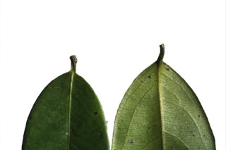
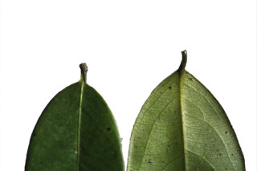

Trees up to 28 m tall.
28 ಮೀ ಎತ್ತರದವರೆಗೆ ಬೆಳೆಯುವ ಮರಗಳು.
28 മീറ്റര് വരെ ഉയരത്തില് വളരുന്ന മരങ്ങള്.
மரம் 28 மீ. உயரம் வரை வளரக்கூடியது.
Bark black; blaze light orange.
ತೊಗಟೆ ಕಪ್ಪು ಬಣ್ಣದಲ್ಲಿದ್ದು ಕಚ್ಚು ಮಾಡಿದ ಜಾಗ ತೆಳು ಕಿತ್ತಳೆ ಬಣ್ಣದಲ್ಲಿರುತ್ತದೆ.
കറുത്ത പുറംതൊലി; വെട്ടുപാടിന് ഇളം ഓറഞ്ച് നിറം.
மரத்தின் பட்டை கருப்பு நிறமுடையது; உள்பட்டை வெளிறிய ஆரஞ்சு நிறமுடையது.
Young branchlets terete, brown puberulous.
ಎಳೆಯ ಕಿರುಕೊಂಬೆಗಳು ದುಂಡಾಗಿದ್ದು, ಕಂದು ಬಣ್ಣದ ಸೂಕ್ಷ್ಮ-ಮೃದುತುಪ್ಪಳದಿಂದ ಕೂಡಿರುತ್ತವೆ.
ഇളം ഉപശാഖകള് ഉരുണ്ടതും, തവിട്ട് രോമിലവുമാണ്.
சிறிய நுனிக்கிளைகள் குறுக்குவெட்டுத் தோற்றத்தில் வளையமானது, அரக்கு நிறமான உரோமங்களுடையது.
Leaves simple, alternate, distichous; petiole 0.7 cm long, canaliculate, hairy when young later glabrous; lamina 5-15 x 1.8-5 cm, oblong to elliptic-oblong, acuminate with blunt tip, base acute, subcoriaceous, glabrous and shining; midrib raised above; secondary_nerves 6-8 pairs, slender; tertiary_nerves closely_horizontally_percurrent.
ಎಲೆಗಳು ಸರಳವಾಗಿದ್ದು ಪರ್ಯಾಯ ಹಾಗೂ ಸುತ್ತು ಜೋಡನಾ ವ್ಯವಸ್ಥೆ ಯಲ್ಲಿದ್ದು ಕಾಂಡದ ಎರಡೂ ಕಡೆಯ ಎದುರು ಬದರಿನ ಸಾಲಿನಲ್ಲಿರುತ್ತವೆ; ಎಲೆ ತೊಟ್ಟುಗಳು 0.7 ಸೆಂ.ಮೀಉದ್ದವಿರುತ್ತವೆ ,ಕಾಲುವೆ ಗೆರೆಗಳನ್ನೊಳಗೊಂಡಿರುತ್ತವೆ ಹಾಗೂ ಎಳೆಯದಾಗಿದ್ದಾಗ ರೋಮಸಹಿತವಾಗಿದ್ದು ಬಲಿತ ನಂತರ ರೋಮರಹಿತವಾಗುತ್ತವೆ; ಪತ್ರಗಳು 5 -15 X1. 8 – .5 ಸೆಂ.ಮೀ. ಗಾತ್ರ, ಅಂಡವೃತ್ತ – ಚತುರಸ್ರದ ಆಕಾರ, ಮೊಂಡಾದ ಅಗ್ರವುಳ್ಳ ಕ್ರಮೇಣ ಚೂಪಾಗುವ ತುದಿ, ಚೂಪಾದ ಬುಡ, ಉಪ-ತೊಗಲನ್ನೋಲುವ, ರೋಮರಹಿತವಾದ ಹಾಗೂ ಹೊಳಪುಳ್ಳ ಮೇಲ್ಮೈ ಹೊಂದಿರುತ್ತವೆ. ಮಧ್ಯನಾಳ ಪತ್ರದ ಮೇಲ್ಭಾಗದಲ್ಲಿ ಉಬ್ಬಿರುತ್ತದೆ.; ಎರಡನೇ ದರ್ಜೆಯ ನಾಳಗಳು 6 - 8ಜೋಡಿಗಳಿದ್ದು ತೆಳುವಾಗಿರುತ್ತವೆ; ಮೂರನೇ ದರ್ಜೆಯ ನಾಳಗಳು ಕಡಿಮೆ ಅಂತರಹೊಂದಿದ್ದು,ಲಂಬರೇಖೆಗೆ ಸಮಕೋನದಲ್ಲಿದ್ದು ಎಲೆದಿಂಡಿಗೆ ಅಡ್ಡವಾಗಿ ಕೂಡುವಂತಹವು.
ലഘൂവായ ഇലകള്, ഏകാന്തരമായി, തണ്ടിന്റെ രണ്ടുഭാഗത്ത് മാത്രമായടുക്കിയിരിക്കുന്നു; ചാലോട്കൂടിയ ഇലഞെട്ടിന് 0.7 സെ.മീ നീളം, ഇളതായിരിക്കുമ്പോള് ഇത് രോമിലമാണ്, പിന്നീട് അരോമിലവും; പത്രഫലകത്തിന് 5 സെ.മീ മുതല് 15 സെ.മീ വരെ നീളവും 1.8 സെ.മീ മുതല് 5 സെ.മീ വരെ വീതിയും, ആയതാകാരം മുതല് ദീര്ഘവൃത്തീയ - ആയതാകാരം വരെയാണ്, മുനപ്പില്ലാത്ത അറ്റത്തോടുകൂടിയ ദീര്ഘാഗ്രം, പത്രാധാരം നിശിതമാണ്, ഉപചര്മ്മില പ്രകൃതം, അരോമിലവും തിളങ്ങുന്നതുമാണ്; മുഖ്യസിര മുകളില് ഉയര്ന്നതാണ്; 6 മുതല് 8 വരെ ജോഡി നേര്ത്ത ദ്വീതീയ ഞരമ്പുകള്; ത്രിതീയ ഞരമ്പുകള് തിരശ്ചീനമായി അടുത്ത പെര്കറന്റ് വിധത്തിലാണ്.
இலைகள் தனித்தவை, மாற்றுஅடுக்கமானவை, இருநெடுக்கு வரிசையிலையடுக்கம் (டைஸ்டிக்கஸ்); இலைக்காம்பு 0.7 செ.மீ. நீளமானது, குறுக்குவெட்டுத் தோற்றத்தில் கேனாலிகுலேட், புதிய இலைகளில் உரோமங்கள் காணப்படும் மற்றும் முதிர்ந்த இலைகள் உரோமங்களற்றது; இலை அலகு 5-15 X 1.8-5 செ.மீ. நீள்சதுரம் முதல் நீள்வட்டம்-நீள்சதுர வடிவமுடையது, அலகின் நுனி மழுங்கி வால் போன்று நீண்டது, அலகின் தளம் கூரியது, சப்கோரியேசியஸ், உரோமங்களற்றது மற்றும் பளபளப்பானது; மையநரம்பு மேற்பரப்பில் அலகின் பரப்பைவிட உயர்ந்தது; இரண்டாம் நிலை நரம்புகள் 6-8 ஜோடிகள்; மூன்றாம் நிலை நரம்புகள் நெருக்கமான கிடைமட்ட பெர்க்கரண்ட்.
Flowers unisexual; male flowers in axillary cymes, tawny pubescent; female flowers in cauliflorus cymes, rusty tomentose.
ಹೂಗಳು ಏಕ ಲಿಂಗಿಗಳು; ಗಂಡು ಹೂಗಳು ಅಕ್ಷಾಕಂಕುಳಿನಲ್ಲಿನ ಮಧ್ಯಾರಂಭಿ ಪುಷ್ಪಮಂಜರಿಯಲ್ಲಿದ್ದು ಕಂದು ಮಿಶ್ರಿತ ಹಳದಿ ಬಣ್ಣ ಹೊಂದಿರುತ್ತವೆ; ಹೆಣ್ಣು ಹೂಗಳು ಕಾಂಡಜನ್ಮಿ ಮಧ್ಯಾರಂಭಿ ಪುಷ್ಪಮಂಜರಿಯಲ್ಲಿದ್ದು ತುಕ್ಕು ಬಣ್ಣದ ದಟ್ಟ ಮೃದು ತುಪ್ಪಳದಿಂದ ಕೂಡಿರುತ್ತವೆ.
പൂക്കള് ഏകലിംഗികളാണ്; കൊഴുത്ത രോമിലമായ, ആണ്പൂക്കള് കക്ഷീയ സൈമുകളിലുണ്ടാകുന്നു; തുരുമ്പന് രോമിലമായ പെണ്പൂക്കള്, മൂത്തതടിയിലുണ്ടാകുന്ന സൈമുകളിലുണ്ടാകുന്നു.
ஓர்பால் மலர்கள்; ஆண்மலர்கள் இலைக்கோணங்களில் காணப்படும் சைம், பொன்னிற உரோமங்களுடையது; பெண்மலர்கள் முதிர்ந்த கிளைகளில் காணப்படும் (காலிஃபுளோரஸ்) சைம், பொன் நிறமான மென்உரோமங்களுடையது.
Berry, globose, woody, 7 cm across; fruiting_calyx woody; seeds up to 10, oblong-oval.
ಬೆರ್ರಿಗಳು ಅಂದಾಜು 7 ಸೆಂ. ಮೀ. ವ್ಯಾಸ ಹೊಂದಿದ್ದು, ದಾರು ರೀತಿಯದ್ದಾಗಿದ್ದು ಗೋಳಾಕಾರದಲ್ಲಿರುತ್ತವೆ; ಕಾಯಿಗಳ ಪುಷ್ಪಪಾತ್ರೆ ದಾರುವಿನ ರೀತಿಯವು; ಬೀಜಗಳು 10 ವರೆಗೆ ಚತುರಸ್ರ–ಅಂಡದ ಆಕಾರ ಹೊಂದಿರುತ್ತವೆ.
കായ 7 സെ.മീ കുറുകേയുളള, മരംപോലുളള, ഗോളാകാര ബെറിയാണ്, കായോട് ചേര്ന്ന് നില്ക്കുന്ന ബാഹ്യദളങ്ങള് മരംപോലെ ദൃഢമാണ്; 10 വരെ, ആയത-അണ്ഡാകാര വിത്തുകള്.
முழுச்சதைகனி (பெர்ரி), உருண்டையானது, கட்டை போன்றது, 7 செ.மீ. குறுக்களவு கொண்டது - கனியின் புல்லி இதழ்கள் கட்டை போன்றது, விதைகள் 10 வரை இருக்கும், நீள்சதுரம்-முட்டை வடிவானது.


 
